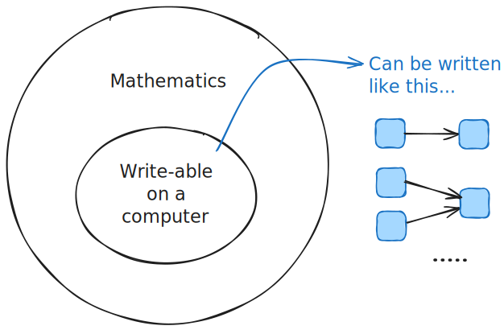
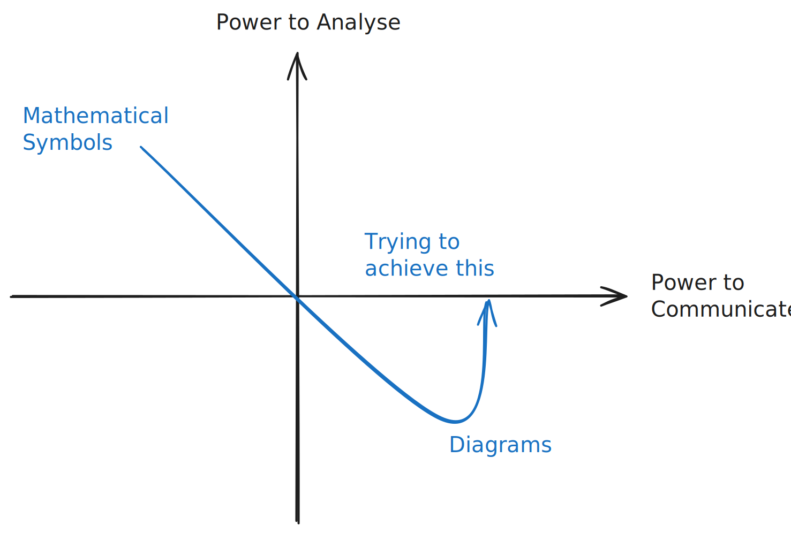

Introducing the ‘stochadocs’
Who are these docs for?
Welcome to the documentation for the stochadex project, a.k.a., the ‘stochadocs’!
This documentation is aimed at users wanting to get to grips with the software and/or understand more about simulated systems in general.
In the latter case, treat the stochadocs as an opportunity to explore the technical foundations for constructing simulations of the real world.
You will see the power of stochastic phenomena and probabilistic thinking without mathematical symbols too.
Why no mathematical symbols?
Mathematical concepts and tools are absolutely essential to understanding and deriving deeper relationships when analysing systems in the real world.
While the explanatory power of mathematical symbols is enormous, their power to effectively communicate ideas is limited by layers of pre-requiste knowledge. Wouldn’t it be cool to try something a bit different?
Instead of churning through all of these interesting concepts with mathematical symbols, this documentation uses a diagrammatic language for understanding simulated systems.
This language owes its mathematical rigor to the fact that any computation can be written as a series of function abstrations and applications. Therefore, since all of the practically useful mathematical calculations in these pages ultimately must be expressed in the computer, we can always find some diagrammatic description of the relevant mathematics that leverages the function abstractions.

The intention is to transfer some level of analytical power from the world of symbols into the world of diagrams and engage a wider group of analytical thinkers in understanding the deeper aspects of simulated systems.

We’ve used these diagrams completely in place of any mathematical formalism throughout the stochadocs, where one can rest assured that the mathematical foundations are solid.